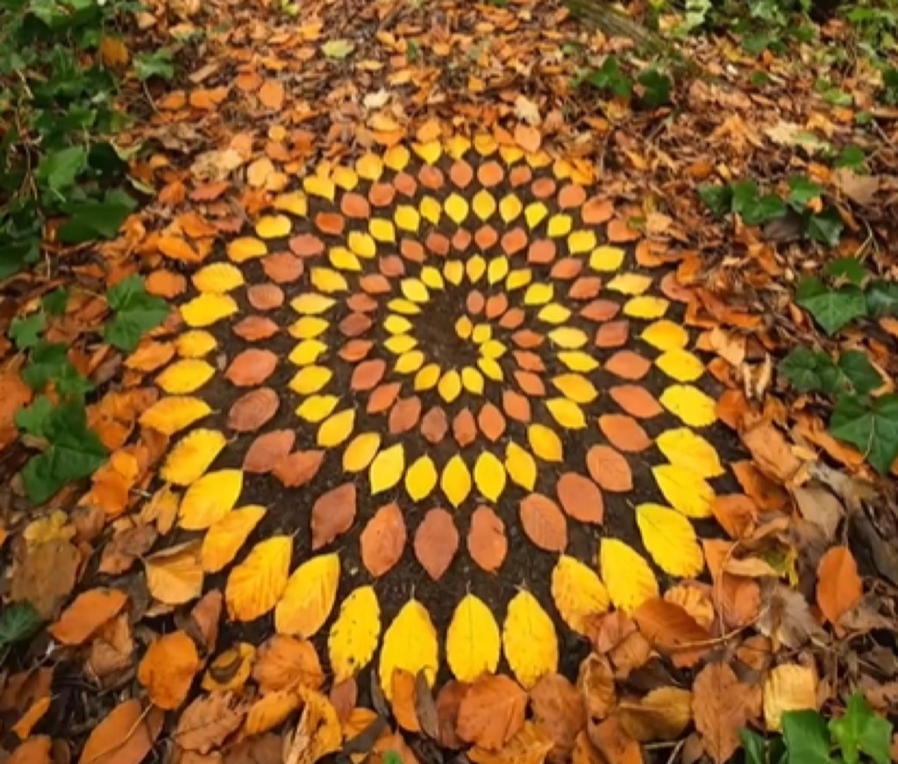

Moritz Schmid Invites You to Step Into the Magical World of Mushrooms
When illustrator Moritz Schmid creates enchanting artwork celebrating mushroom diversity and rendering fungi with magical sensibility and distinctive artistic vision, the work generates fascination through celebration of often-overlooked organisms and transforms biological subjects into imaginative artistic territory. Schmid's mushroom illustrations merge scientific interest with artistic imagination, suggesting that natural world objects merit serious creative engagement and that fungal diversity constitutes worthy subject matter for sophisticated artistic practice.
Moritz Schmid developed reputation through distinctive mushroom-focused illustration practice emphasizing magical sensibility and careful scientific observation. Rather than treating fungi as merely functional organisms or garden problems, he approaches mushrooms with genuine fascination and artistic seriousness. The work celebrates mushroom diversity while validating fungal forms' inherent visual appeal and aesthetic potential.
Schmid's illustrations employ distinctive stylistic approach capturing mushroom diversity with attention to form detail and color variation. The technical execution demonstrates understanding of botanical accuracy alongside imaginative artistic interpretation creating magical atmosphere.
Cultural Significance
The work contributes to expanding fungal appreciation beyond mycological specialization toward mainstream cultural engagement. The artistic celebration of mushrooms suggests natural world organisms merit serious creative attention and imaginative representation.

Inspiration and Process
Inspiration emerges from genuine fascination with fungal diversity and recognition of mushrooms' visual appeal and imaginative potential. The process involves studying botanical subjects, developing distinctive artistic voice, and translating scientific observation into magical artistic vision.
Viewers typically respond to distinctive artistic celebration of mushrooms and appreciate magical sensibility transforming fungal subjects into enchanting artistic territory.
Moritz Schmid's mushroom illustrations represent significant artistic practice validating fungal diversity as worthy of serious creative engagement and imaginative artistic celebration.